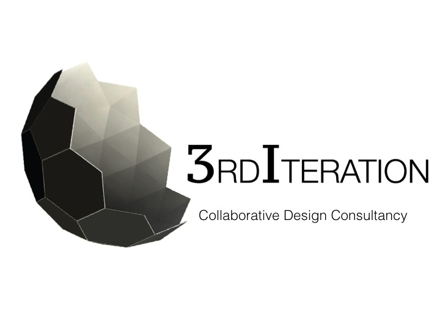
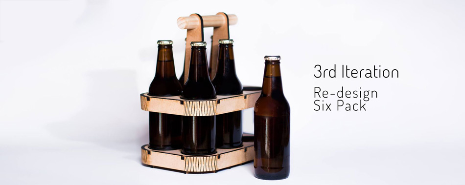
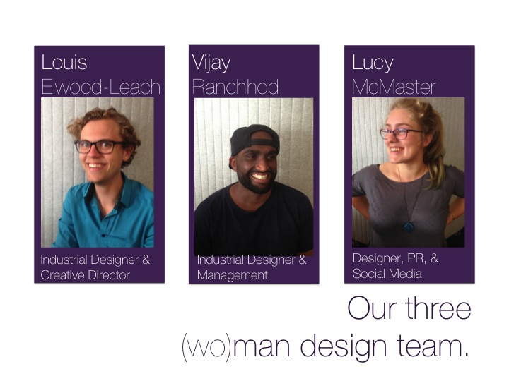

I am looking for a paid internship or full time position from March! I would love to work for your company
Summer Research Scholar with Victoria University of Wellington
Graphic Designer for Clean Slate Press publishing company
Working with small businesses
Retail Assistant for Strandbags on Lambton Quay
VicLink Entrepreneur Bootcamp
Summer Research Scholarship
Available full time from March onwards
Teaching fellow and researcher at Victoria University of Wellington Design School
Manager of Lambton Quay Strandbags store
Cyclone Computers Sales Director
Digital Marketing & Brand Development Consultant at Counties Manukau Health
This project was centered on interviewing a local non-profit and finding out what difficulties they faced in general day-to-day operations. I then narrowed down what creative design solution I could provide them with. Using their current logo and branding information I decided to redesign their main mode of transport – donated shopping trolleys. To reduce costs the non-profit sources donated food from only establishments that are within walkable distances. I needed to improve the branding visibility of the non-profit for free and then allow for some spaces to advertise their supporters. This is what my final solution aimed to do.
I also created a simple info pamphlet that aids in understnading the non-profit to passerby’s. I wanted to offer a simple material guide to understand how the Wellington Free Store operates.
Designing with a social conscious is important for me. With the cost of food so high and food security being so low within large demographics of New Zealanders. I thought that this non-profit was making a big different with a very simple solution.
3rd Iteration was created during a programme called VicLink Entrepreneur Bootcamp. This was a startup incubator where they gave us a crash course over several months on how to set up a business. We were a group of three design students wanting to create a rapid prototyping service for industrial design. We began by approaching local wellington businesses to gauge a sense of interest as our market validation. We ended up narrowing our service to laser cut, flat pack, creative packaging. I lead the final pitch at the end of the course that was well received. The design featured here was to market to the booming craft beer scene of wellington which ended up being a project that was continued with one industry partner. This project was placed on a back burner during 2015 while our team members all resumed University study, however we plan to continue developing our design service after finishing our degrees.
  This project was created while doing a paper on healthcare design. With a combination of PhD students and industry professionals we were able to learn about a condition rapidly and then create a solution for it. I chose Autism, and decided to design a conceptual device to help children with Autism get dressed. Through research I discovered that often children with autism can find the activity of getting dressed really distressing – which can lead to meltdowns. I pitched my idea to the group of students along with everyone else we then voted on the project we wanted to work on, as a result my project was chosen which was then developed into a refined prototype. Part of this project was creating a kick starter styled video for our final presentation. We were pleased as a group with our concept. I then carried on this project as an independent study and wrote a psych based paper on helping children get dressed.
Due to IP restrictions I am unable to show full content of this project however if you would like further information please get in contact with me.
This project began with the brief of having to re-design an already designed object. I decided to center this project on computing, an element of human life that we had learnt about. What I began with was the origins of the personal computer ‘desktop’ and how we came to have a digital representation of a traditional desk. I wanted to break down why we had continued to use this desktop metaphor. With Personal Computers having been established within work settings and closely associated with efficiency and crunching numbers I wanted to explore how else people used their computer. Did people desire to use their PC’s for reasons other than being productive. Did they use them for relaxation rather than working? The Calm OS was a conceptual desktop user interface that was aiding in an experience of relaxation and a form of mediation called mindfulness. This was a relatively far out concept but I enjoyed pushing the box of what ifs and I think it was valuable in understanding how to attempt to be innovative. Understanding the context of the user as well as the culture in which you are using a design allows for design parameters to form.
Mindfull. Is a portion control solution that resulted from a group project I was a part of for a design psychology paper I took in 2014. We began with the issue of over eating and began to play around with the idea of manipulating the perceived amount of food in a bowl or on a plate so that someone would feel as though they had eaten more. We based out design iterations on academic journal studies and then tested our final solution with both a larger group test and a smaller group with interviews on how they thought the bowl and plate set had differed from a control group. Our overall results concluded that there were benefits in manipulating portion sizing and as a result people thought they had eaten as much, or even more, than they really had. The psychology element of this project was what I think enabled the creative output to be potentially helpful in real life, which is part of why I think we went on to win the Howard Wright Award for Excellence in Industrial Design. This project won against third year designs, and as a second year group we were very proud! Our effective teamwork allowed us to have a high quality finished product.
I you’d like to check out more of our process work and brainstorming then please look at our project blog
mindfulldesign.tumblr.com
This project was a required to be a photo essay documenting out cultural experience of moving within our cities. The Flanuer is someone who moves through a city by foot and seeks the unusual and relishes in non-conformity. It was a concept of looking at culture that is closely tied in with the French renaissance period. As a photographer we are the modern version of the urban observer, this is where the concept of the flanuer and the photographer cross over. This conceptual project was centered on the juxtaposition of freely observing and how our urban experiences are increasingly pre-determined and controlled. The orange pixilation and photo manipulation was to show the taking over of holistic experiences by quantification and justification.